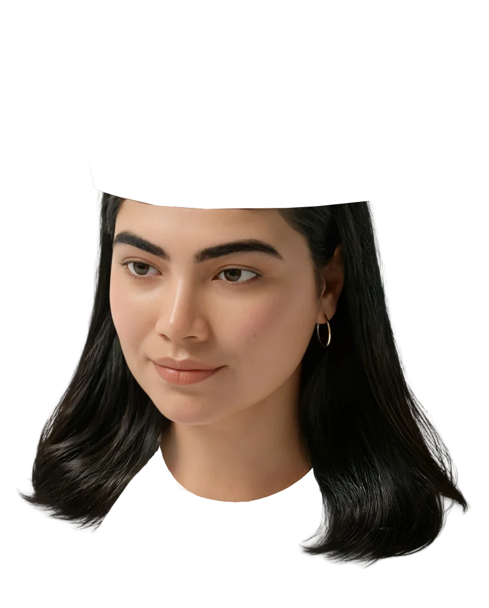
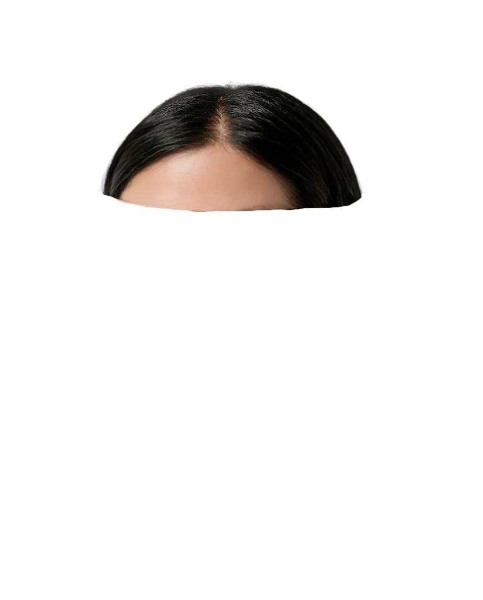

Multimedia Designer & Motion Designer
From Caracas, based in Buenos Aires. I’m a multimedia designer working in motion design and video editing at RESUMIDO. I love bringing brands and stories to life through playful animation.
I’m a multimedia designer from Caracas, based in Buenos Aires, with a focus on motion design and video editing.
I currently work at RESUMIDO, creating animated graphics and audiovisual content, while finishing my Multimedia Design degree at Escuela Da Vinci.
My work brings together visual identity, animation, and digital storytelling, inspired by music, internet culture, and a love for 2000s nostalgia.
Available for freelance motion design and fun brand projects.
Let’s make something move.Multimedia Designer & Motion Designer
I’m a multimedia designer born in Caracas, Venezuela, and based in Buenos Aires, Argentina. These days, my work revolves around motion design: bringing ideas, identities, and stories to life through animation and video.
I currently work as a motion designer and video editor at RESUMIDO, creating animated graphics and audiovisual content for its shows and digital platforms. I’m also finishing my degree in Multimedia Design at Escuela Da Vinci.
My creative background spans illustration, visual identity, and digital content. I love bringing those disciplines together to make work that feels playful, expressive, and full of personality.
I’m a curious person with way too many interests. Music, film, fashion, illustration, and internet culture all find their way into what I make, with a soft spot for 2000s nostalgia.
I love figuring out how things work, connecting unexpected references, and turning a small idea into something you can watch, feel, or interact with. If I don’t know how to make it yet, I’m probably already looking it up.
Have something fun in mind?
I’m available for freelance motion design projects, animated brand identities, and playful visuals for brands, people, and projects with personality.
Whether you have a clear brief or an idea you’re still figuring out, I’d love to hear about it.
Let’s make something move.

You can browse all my projects on mobile, but some animations and interactive details are easier to appreciate on desktop.